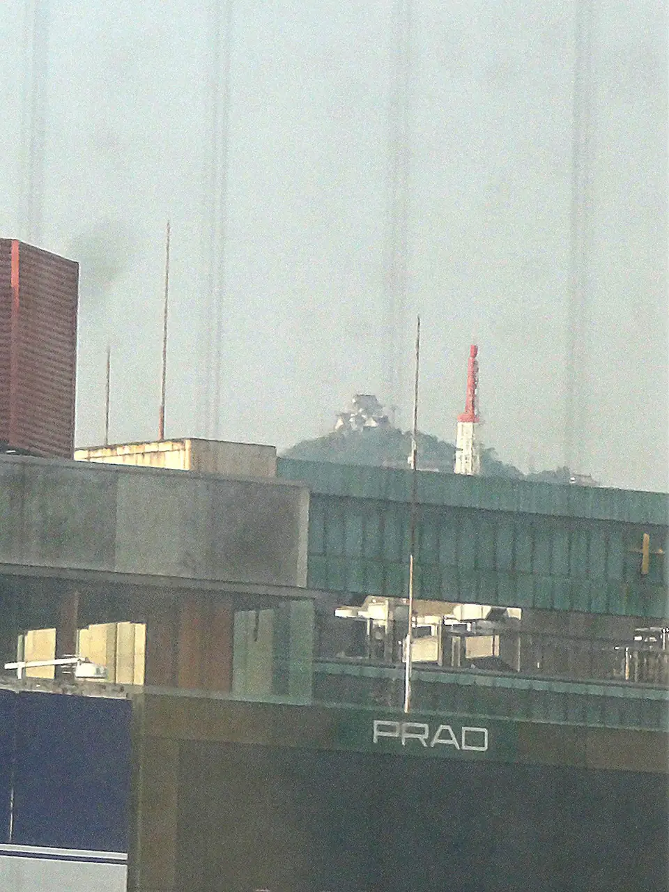

TOKAIDO SHINKANSEN WINDOW VIEW
岐阜城はいつ見える？座席側は？
山の上に、小さな城。

- 見える区間
- 岐阜羽島 → 米原
- 座席側
- E席・山側
- タイミング
- 東京発のぞみ基準で約106分後
- 写真
- 2 枚
岐阜城の見つけ方
岐阜羽島を過ぎ、木曽三川を渡る前後で、E席側の遠くに金華山が見えることがあります。その山頂にあるのが岐阜城。線路からは10km以上離れているため、城そのものを見つけるには晴れた日と少しの集中力が必要です。掲載写真は、同じ岐阜城を東海道本線側から捉えた記録です。
もっと見る: @letus10: 岐阜城車窓記事
東京から新大阪方面へ向かう場合は、岐阜羽島 → 米原が近づいたらE席・山側の窓を少し早めに見てください。新大阪から東京方面へ向かう場合は、通過順が逆になります。
位置の目安
地図をひらくスポット位置と、新幹線から見る位置を切り替えられます。
岐阜城を見逃さないコツ
1. 先に見る方向を決める
岐阜羽島 → 米原が近づいたら、E席・山側の窓を先に意識してください。現在地から追う場合はライブガイド、事前に確認する場合はこのページの地図が役立ちます。
はっきり見えるのは数秒ほど。案内が出てからカメラを探すより、先に座席側と窓の方向を決めておくと拾いやすくなります。
2. 見どころ
岐阜城は、富士山や大きな城のような主役級ではなく、知っている人だけが拾えるタイプの車窓です。見つけること自体が楽しいので、旅慣れた人ほど小さな発見として効いてきます。
写真で見る岐阜城

 関連
南宮大社
関連
南宮大社
 関連
セロテープの壁看板
関連
セロテープの壁看板